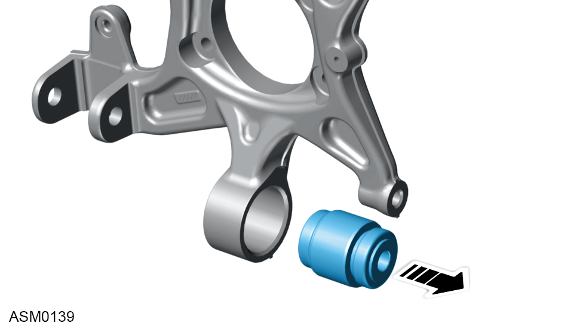
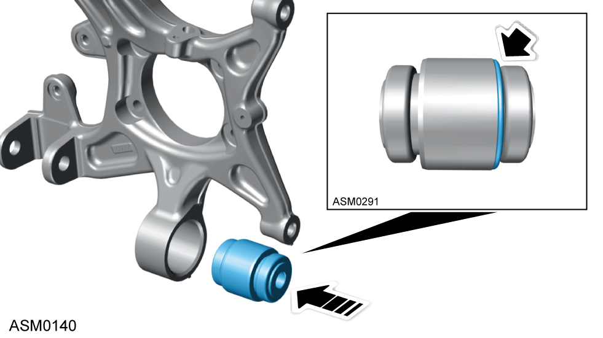
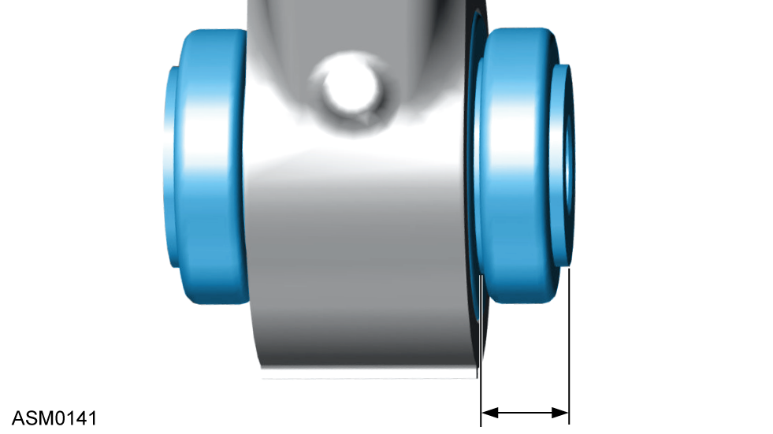

Hub Carrier Spherical Joint - Left Side - Rear
Print
Operation Code: 31.03.36-02
Removal
- Remove hub carrier. Refer to procedure.

- Remove old bush using hydraulic press.
Installation
- Installation is the reverse of removal except for the following:
- Clean hub carrier bore before installing new bush.

- Install spherical bush with rolled edge pushing into hub carrier.

- Spherical bush front side (rolled edge) should protrude 13.5mm ± 0.5mm.